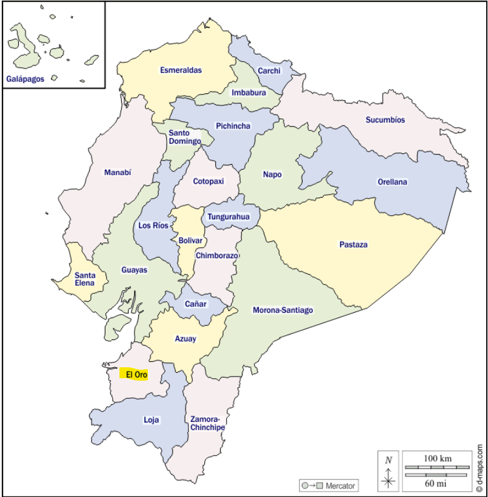

Zaruma
La ciudad de Zaruma está ubicada en la parte sur-oriental de la Provincia de El Oro. Sobre las laderas de los Andes Occidentales. Se encuentra a una altitud de 1200 metros sobre el nivel del mar.
En un terreno escarpado con fuertes pendientes. Limita al norte con la provincia del Azuay, al sur con el Cantón Piñas, al este con el Cantón Portovelo y al oeste con los cantones Chilla y Atahualpa. La distancia que existe entre Zaruma y la Capital de El Oro (Machala) es de 106 km.
